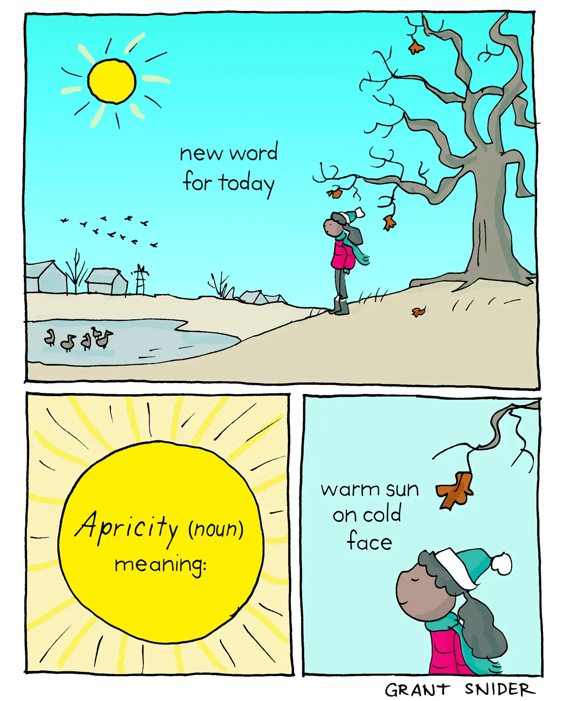

Happy Thursday! Thank you for supporting the Daily Bulletin project.
- Suggest improvements to the Daily Bulletin project.
Wellbeing Inspirations
Want to contribute to a future Daily Bulletin? Share your inspirations to give everyone some morning wellbeing energy!
Cartoon of the Day

Created by Grant Snider.
Delicious Dinings
| Day | Meal | Options |
|---|---|---|
| Thu | Breakfast | Continental Counter |
| Lunch | Chilli non Carne 🌱 | |
| Baked Potato 🌱 | ||
| Dinner | Moroccan Lamb Burger | |
| Grilled Halloumi 🌱 | ||
| Fri | Breakfast | Burrito |
| Lunch | Fish & Chips | |
| Crispy Buttermilk Quorn 🌱 | ||
| Dinner | Vegan Chow Mein Noodles 🌱 | |
| Crispy Buttermilk Quorn 🌱 |
The catering team would like to remind everyone to wash their hands before coming to the dining hall, and to refrain from eating in the servery area. Thank you!
Retrieved from Shared Weekly Menu. For reference only; accuracy not guaranteed.
Important Events
| Day | Time | Event | Location |
|---|---|---|---|
| Fri | 09:00–17:30 | IB1 - Lighthouse Hackathon | nan |
| 16:00–17:00 | Seasonal Cafe Concert | Glassroom | |
| 20:00–22:00 | Hideout | Valentina | |
| 20:30–22:00 | SOSH | nan |
Retrieved from What's On This Week.
Today in History
- 1851 – The French navy bombarded the city of Salé, Morocco, damaging its infrastructure and the Great Mosque of Salé.
- 1942 – World War II: The first meeting of the Anti-Fascist Council for the National Liberation of Yugoslavia was convened at Bihać in northwestern Bosnia.
- 1979 – Pakistan International Airlines Flight 740, crashed shortly after takeoff near Taif, Saudi Arabia, killing all 156 people on board.
- 1983 – Six robbers broke into a Brink's-Mat warehouse at Heathrow Airport in London and stole £26 million in gold, diamonds and cash.
- 2011 – Mars Science Laboratory, a NASA mission carrying the rover Curiosity on board, was launched from Cape Canaveral.
Retrieved from Wikipedia.
Today in News
- Cheers and applause as Jensen Huang returns to Nvidia office
- First Lady Melania Trump welcomes this year's White House Christmas tree
- Canadian astronaut welcomes baby girl from space station
- US Army says controlled blast of explosives in Iowa was 'huge success'
- US announces new tariffs on host of countries including China
- Trump's rescue of Nvidia's Huang brings political risks
Retrieved from BBC News.